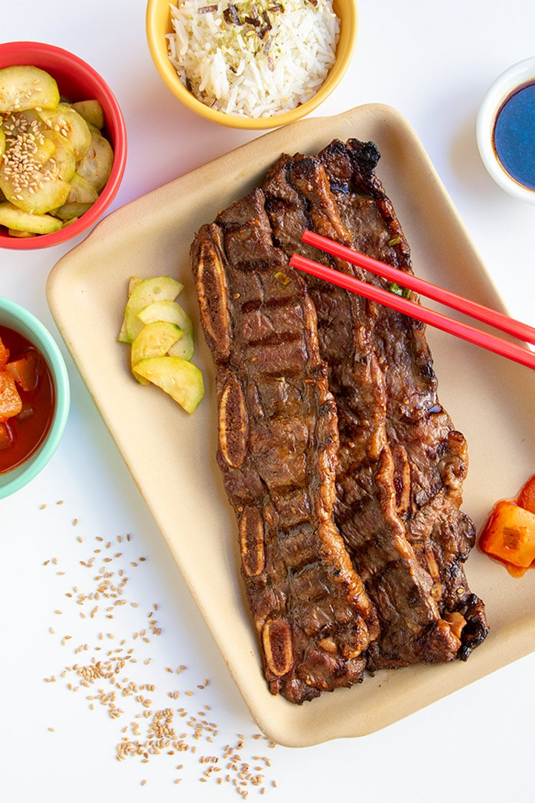

Galbi is a grilled dish in Korean cuisine that is made with marinated beef (or pork) short ribs in a ganjang-based sauce (Korean soy sauce). The total time to complete this recipe is about
7 hours and 25 minutes. Once complete, this recipe will produce 5 servings.
- ¾ cup soy sauce
- ¾ cup water
- 3 tablespoons white vinegar
- 2 tablespoons sesame oil
- ½ large onion, minced
- ¼ cup minced garlic
- ¼ cup dark brown sugar
- 2 tablespoons white sugar
- 1 tablespoon black pepper
- 3 pounds Korean-style short ribs (beef chuck flanken, cut 1/3- to 1/2-inch-thick across bones)
- Pour soy sauce, water, vinegar, and sesame oil into a large, non-metallic bowl.
- Whisk in onion, garlic, brown sugar, white sugar, and pepper, whisking until sugars dissolve.
- Submerge ribs in the marinade.
- Cover the bowl and refrigerate 7 to 12 hours; the longer, the better.
- Preheat an outdoor grill for medium-high heat.
- Remove ribs from marinade and shake off excess; discard marinade.
- Cook on the preheated grill until the meat is no longer pink, 5 to 7 minutes per side.